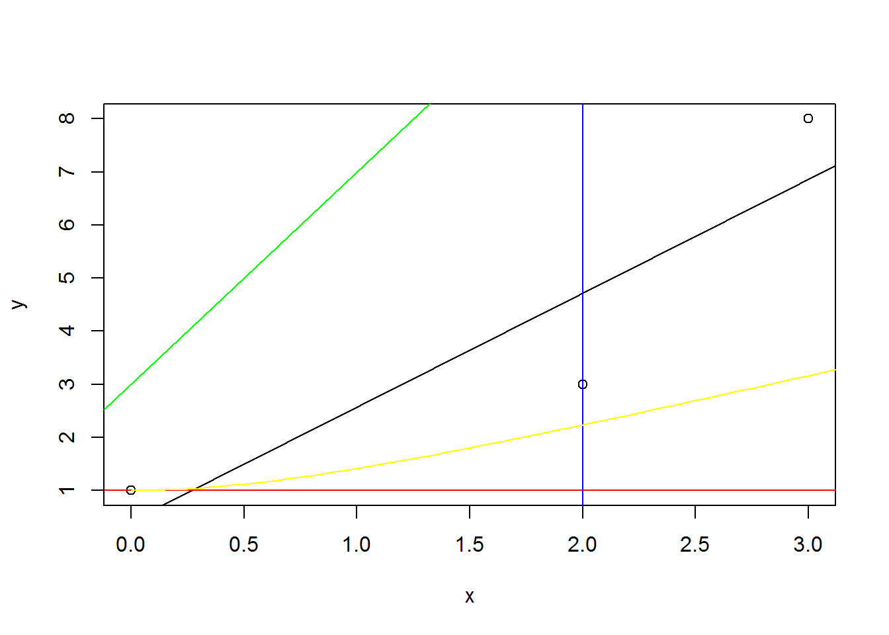

Week 1 Tutor -- R语言入门（3）-- 作图
Some of the key base plotting functions
• plot(): plots based on the object type of the imput
• lines(): add lines to the plot (just connect dots)
• points(): add points
• text(): add text labels to a plot using x,y coordinates
• title(): add titles
• mtext():add arbitrary text to the margin
• axis(): adding axis ticks/labels
Some important parameters
• pch: the plotting symbol (plotting character)
• lty: the line type; solid, dashed, …
• lwd: the line width; lwd=2
• col: color; col=“red”
• xlab: x-axis label; xlab=“units”
• ylab: y-axix label; ylab=“price”
x <- seq(-2*pi,2*pi,0.1)
plot(x, sin(x), plot()意味着它是一系列函数的占位符。
main="my Sine function", 图名
xlab="the values", X坐标名
ylab="the sine values", Y坐标名
type="s", 备注:“p”-points(defult);“l”-lines;“b”-both points and lines
col="blue") 颜色
legend("topleft", 图注
c("sin(x)","cos(x)"),
fill=c("blue","red")
)
abline(lm(mtcars$mpg~mtcars$wt), col="red", lwd=3) 参考线
只是初步了解,其他的具体R语言作图方法在后续的课或其他课程中再学
在图像上加辅助线
x <- c(0,2,3)
y <- c(1,3,8)
plot(x,y) # same as before
fit <- lm(y ~ x) # a regression line
#The call to abline() then adds a line to the current graph.
#abline(c(2,1)) adds y = x + 2
abline(fit) #adds a line to a plot.
abline(h=1, col="red")
abline(v=2, col="blue")
abline(3,4, col="green") # y=3x+4
curve((x^2+1)^0.5,0,5,add=T, col="yellow")

导出保存图
jpeg(file="plot1.jpeg") 保存到当前文件夹
png(file="plot2.png",width=600, height=350)
pdf(file="saving_plot4.pdf")
hist(Temperature, col="gold")
dev.off()